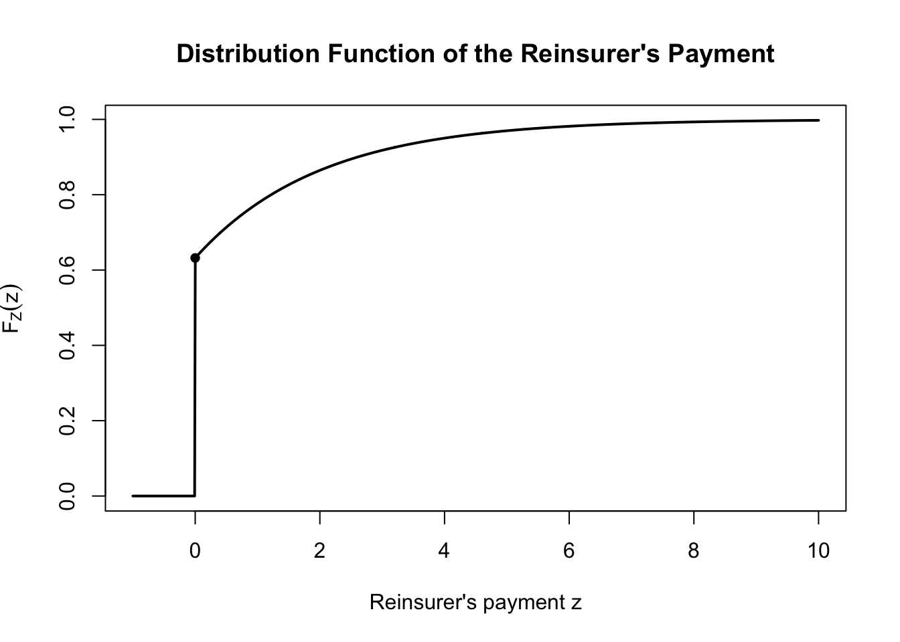

2Chapter 2: Risk Sharing — Reinsurance and Deductibles
2.1 Introduction to Risk Sharing
Insurance is a form of risk sharing. When a loss occurs, the financial burden does not necessarily fall entirely on one party. Depending on the insurance and reinsurance arrangements in place, a claim may be shared among the policyholder, the direct insurer, and the reinsurer.
The purpose of this chapter is to describe how a gross claim is divided among these parties and to develop the mathematical framework needed to analyse common risk-sharing arrangements.
2.1.1 Basic notation
Let \(X\) denote the gross claim amount, that is, the amount of the loss before considering any insurance or reinsurance arrangements.
When a claim occurs, different parties may be responsible for different portions of this amount. We use the following notation:
\(V\) is the amount of the claim paid by the policyholder;
\(Y\) is the amount of the claim paid by the direct insurer, after receiving any reinsurance recovery;
\(Z\) is the amount of the claim paid by the reinsurer.
The three amounts must add up to the original claim:
\[
X=V+Y+Z.
\]
This equation provides the basic accounting identity for risk sharing.
In many of the examples in this chapter, we will initially assume that there is no deductible. In this case, the policyholder does not contribute to the claim payment, so that
\[
V=0.
\]
The basic relationship then becomes
\[
X=Y+Z.
\]
Thus, once the gross claim \(X\) is known, the risk-sharing arrangement determines how much is retained by the insurer, \(Y\), and how much is transferred to the reinsurer, \(Z\).
2.1.2 Insurance and reinsurance as risk-sharing arrangements
It is useful to distinguish between two stages of risk sharing.
First, the insurance contract determines how much of the loss is borne by the policyholder and how much is covered by the direct insurer. A deductible is one example of such an arrangement.
Second, the direct insurer may transfer part of its risk to a reinsurer. The reinsurer then pays part of the claim according to the terms of the reinsurance contract.
Consequently, the original loss \(X\) can be viewed as being divided into three components:
\[
\boxed{X=V+Y+Z}.
\]
The interpretation is straightforward:
\(V\) represents the portion retained by the policyholder;
\(Y\) represents the portion ultimately retained by the direct insurer;
\(Z\) represents the portion transferred to the reinsurer.
This decomposition will be used throughout the chapter.
2.1.3 Why does an insurer reinsure?
An insurer may receive many claims of different sizes. Although most claims may be relatively small, an individual claim can occasionally be very large. If the insurer were required to pay every claim in full, a few large claims could have a substantial effect on its financial position.
Reinsurance allows the insurer to transfer part of this risk to another insurer, the reinsurer.
For example, suppose an insurer agrees to cover claims arising from a portfolio of motor policies. If the insurer retains every claim in full, then for a claim of amount \(X\),
\[
Y=X
\]
and
\[
Z=0.
\]
If the insurer purchases reinsurance, part of the claim may instead be recovered from the reinsurer. In that case,
\[
Y<X
\]
and
\[
Z>0.
\]
The reinsurance arrangement therefore changes the distribution of the amount ultimately paid by the insurer.
This is an important distinction. The gross claim distribution describes the losses generated by the underlying insurance portfolio, whereas the net claim distribution describes the amounts that remain with the insurer after risk sharing.
2.1.4 Gross and net claims
The random variable \(X\) represents the gross claim amount. It describes the loss before considering reinsurance recoveries.
The random variable \(Y\) represents the net claim amount for the insurer. It is the amount that the insurer ultimately pays after accounting for the recovery from the reinsurer.
The random variable \(Z\) represents the reinsurance recovery, or the amount paid by the reinsurer.
Under the assumption of no deductible,
\[
X=Y+Z.
\]
Taking expectations gives
\[
E(X)=E(Y)+E(Z).
\]
Thus, the expected gross claim is divided between the expected amount retained by the insurer and the expected amount recovered from the reinsurer.
The same decomposition applies to other quantities of interest. For example,
\[
\operatorname{Var}(X)
\]
describes the variability of the gross claim, whereas
\[
\operatorname{Var}(Y)
\]
describes the variability of the amount retained by the insurer.
An important purpose of reinsurance is therefore to reduce the insurer’s exposure to large claims and, consequently, to reduce the variability of its claim payments.
2.1.5 Proportional and non-proportional risk sharing
Reinsurance arrangements can be broadly classified into proportional and non-proportional reinsurance.
Under proportional reinsurance, the reinsurer takes a fixed proportion of the claim. If \(\alpha\) denotes the retained proportion, then
\[
Y=\alpha X
\]
and
\[
Z=(1-\alpha)X.
\]
The parameter \(\alpha\) is known as the retained proportion or retention level.
For example, if \(\alpha=0.75\), the insurer retains \(75\%\) of every claim and the reinsurer pays the remaining \(25\%\):
\[
Y=0.75X,
\qquad
Z=0.25X.
\]
The key feature is that the proportions are the same regardless of the size of the claim.
Under non-proportional reinsurance, the amount paid by the reinsurer depends on the size of the claim. A common example is excess-of-loss reinsurance.
Suppose the insurer retains claims up to an amount \(M\). The insurer pays any individual claim in full up to \(M\), while the reinsurer pays the amount above \(M\). Thus,
\[
Y=\min(X,M)
\]
and
\[
Z=(X-M)_+,
\]
where
\[
(x)_+=\max(x,0).
\]
The relationship
\[
X=Y+Z
\]
continues to hold.
For a claim below the retention level, \(X\leq M\),
\[
Y=X,
\qquad
Z=0.
\]
For a claim above the retention level, \(X>M\),
\[
Y=M,
\qquad
Z=X-M.
\]
Thus, unlike proportional reinsurance, the insurer’s retained proportion is not constant under excess-of-loss reinsurance.
2.1.6 A useful way to view risk sharing
The different arrangements can be understood by asking a simple question:
Given a gross claim \(X\), how much does each party pay?
These payment functions provide the foundation for the mathematical analysis in the remainder of the chapter. Once the payment functions have been specified, quantities such as expected insurer payments, expected reinsurance recoveries, and variances can be calculated from the distribution of the gross claim \(X\).
The key idea is therefore simple:
\[
\boxed{\text{Gross claim}
\longrightarrow
\text{risk-sharing arrangement}
\longrightarrow
\text{payments by each party}.}
\]
2.2 Reinsurance
Reinsurance is an arrangement under which an insurer transfers part of the risk arising from its insurance portfolio to another insurer, known as the reinsurer. The original insurer is referred to as the direct insurer or cedant.
Suppose \(X\) is the gross claim amount and there is no deductible. The insurer’s claim payment and the reinsurer’s recovery satisfy
\[
X=Y+Z,
\]
where \(Y\) is the amount ultimately paid by the direct insurer and \(Z\) is the amount paid by the reinsurer.
The reinsurance contract determines how \(X\) is divided between \(Y\) and \(Z\). Two important forms of reinsurance are proportional reinsurance and excess-of-loss reinsurance.
Figure 2.2: Proportional vs. Non-Proportional Reinsurance
2.2.1 Proportional Reinsurance
Under proportional reinsurance, the direct insurer and the reinsurer share each claim according to an agreed proportion.
Let \(\alpha\) denote the retained proportion or retention level. The insurer retains the proportion \(\alpha\) of each claim, while the reinsurer pays the remaining proportion \(1-\alpha\). Thus,
\[
Y=\alpha X
\]
and
\[
Z=(1-\alpha)X.
\]
The relationship
\[
X=Y+Z
\]
is therefore satisfied for every value of \(X\).
For example, suppose the insurer retains \(75\%\) of each claim, so that \(\alpha=0.75\). For a claim of \(100{,}000\),
\[
Y=0.75(100{,}000)=75{,}000
\]
and
\[
Z=0.25(100{,}000)=25{,}000.
\]
The insurer and reinsurer therefore share every claim in the same proportion, regardless of its size.
A common form of proportional reinsurance is quota share reinsurance, under which the retained proportion is the same for all risks in the portfolio. For example, a \(75\%\) retained quota share means that the direct insurer retains \(75\%\) of every claim and the reinsurer pays \(25\%\).
Another form is surplus reinsurance, under which the proportion can vary from one risk to another. In this course, we focus on quota share reinsurance.
The main characteristic of proportional reinsurance is therefore
\[
\frac{Y}{X}=\alpha,
\]
whenever \(X>0\). The proportion of each claim retained by the insurer is constant.
2.2.2 Excess-of-Loss Reinsurance
Under excess-of-loss reinsurance, the reinsurer does not pay a fixed proportion of every claim. Instead, the reinsurer pays claims, or parts of claims, above a specified retention level.
Let \(M\) denote the amount retained by the insurer. The insurer pays any individual claim in full up to the amount \(M\). The reinsurer then pays the amount of the claim above \(M\).
The insurer’s payment is therefore
\[
Y=\min(X,M),
\]
while the reinsurer’s recovery is
\[
Z=(X-M)_+,
\]
where
\[
(x)_+=\max(x,0).
\]
It follows immediately that
\[
X=Y+Z.
\]
The payment functions can be illustrated by considering two cases.
If the claim does not exceed the retention, \(X\leq M\), then
\[
Y=X,
\qquad
Z=0.
\]
The insurer pays the claim in full.
If the claim exceeds the retention, \(X>M\), then
\[
Y=M,
\qquad
Z=X-M.
\]
The insurer pays only the retention amount \(M\), and the reinsurer pays the excess.
For example, suppose the retention is \(M=50{,}000\). For a claim of \(30{,}000\),
\[
Y=30{,}000,
\qquad
Z=0.
\]
For a claim of \(80{,}000\),
\[
Y=50{,}000,
\qquad
Z=30{,}000.
\]
For a claim of \(500{,}000\),
\[
Y=50{,}000,
\qquad
Z=450{,}000.
\]
Unlike proportional reinsurance, the insurer does not retain a constant proportion of the claim. Instead, the insurer’s payment is capped at the retention level \(M\).
2.2.3 Limits and Layers
An excess-of-loss contract may specify not only a retention but also a maximum amount that the reinsurer will pay. This creates a reinsurance layer.
Suppose the insurer retains the first \(M\) of each claim and the reinsurer provides cover of \(L\) above this retention. The reinsurer’s payment is
The reinsurer pays nothing when \(X\leq M\), pays the amount between \(M\) and \(X\) when \(M<X\leq M+L\), and pays the maximum amount \(L\) when \(X>M+L\).
For example, consider a layer of \(30{,}000\) excess of \(20{,}000\). The reinsurer covers losses between \(20{,}000\) and \(50{,}000\). Thus,
\[
Z=\min\{(X-20{,}000)_+,30{,}000\}.
\]
The payments for several claim amounts are:
Gross claim \(X\)
Insurer payment \(Y\)
Reinsurer payment \(Z\)
\(15{,}000\)
\(15{,}000\)
\(0\)
\(30{,}000\)
\(20{,}000\)
\(10{,}000\)
\(50{,}000\)
\(20{,}000\)
\(30{,}000\)
\(80{,}000\)
\(50{,}000\)
\(30{,}000\)
The terminology retention, limit, and layer is useful for describing such contracts.
The retention\(M\) is the amount of each claim retained by the insurer before the reinsurance begins.
The limit\(L\) is the maximum amount that the reinsurer will pay under the layer.
The layer describes the range of claim amounts covered by the reinsurer, from \(M\) to \(M+L\).
If there is no upper limit, the cover is unlimited, and the reinsurer’s payment reduces to
\[
Z=(X-M)_+.
\]
Thus, an unlimited excess-of-loss contract can be viewed as a special case of a reinsurance layer.
2.2.4 Comparing Proportional and Excess-of-Loss Reinsurance
The two arrangements differ mainly in how the reinsurer’s payment responds to the size of the claim.
Under proportional reinsurance,
\[
Z=(1-\alpha)X.
\]
The reinsurer pays a fixed proportion of every claim.
Under excess-of-loss reinsurance with retention \(M\),
\[
Z=(X-M)_+
\]
for unlimited cover, or
\[
Z=\min\{(X-M)_+,L\}
\]
for a limited layer.
The distinction can be summarized as follows:
Proportional reinsurance
Excess-of-loss reinsurance
Basis of payment
Fixed proportion of claim
Amount above retention
Insurer payment
\(Y=\alpha X\)
\(Y=\min(X,M)\) for unlimited cover
Reinsurer payment
\(Z=(1-\alpha)X\)
\(Z=(X-M)_+\) for unlimited cover
Treatment of small claims
Shared
Usually retained by insurer
Treatment of large claims
Shared in the same proportion
Substantial part transferred to reinsurer
This difference is important from the insurer’s perspective. Proportional reinsurance shares the cost of all claims, whereas excess-of-loss reinsurance is primarily designed to protect the insurer against larger claims.
The payment functions developed in this section will be used to calculate expected insurer payments, expected reinsurance recoveries, and other quantities of actuarial interest in the remainder of the chapter.
2.3 Deductibles and Policy Limits
Reinsurance transfers part of the insurer’s risk to a reinsurer. A deductible, in contrast, transfers part of the risk to the policyholder. A policy limit restricts the maximum amount that the insurer will pay.
These arrangements can therefore be described using the same risk-sharing framework introduced earlier. Let \(X\) denote the gross claim amount, \(V\) the amount paid by the policyholder, \(Y\) the amount paid by the insurer, and \(Z\) the amount paid by the reinsurer. In the absence of reinsurance,
\[
X=V+Y.
\]
If reinsurance is also present, the full decomposition is
\[
X=V+Y+Z.
\]
In this section, we focus on the relationship between the gross claim \(X\), the policyholder payment \(V\), and the insurer payment \(Y\).
2.3.1 Deductibles
A deductible is an amount of a claim that must be borne by the policyholder before the insurer makes a payment.
Suppose the policy has an ordinary deductible of amount \(d\). The policyholder pays the first \(d\) of the claim, while the insurer pays the amount exceeding \(d\).
The policyholder’s payment is therefore
\[
V=\min(X,d),
\]
and the insurer’s payment is
\[
Y=(X-d)_+.
\]
Since
\[
\min(X,d)+(X-d)_+=X,
\]
we have
\[
X=V+Y.
\]
The payment functions can be understood by considering two cases.
If \(X\leq d\), the claim is entirely below the deductible. The policyholder pays the claim in full:
\[
V=X,
\qquad
Y=0.
\]
If \(X>d\), the policyholder pays the deductible and the insurer pays the remainder:
\[
V=d,
\qquad
Y=X-d.
\]
For example, suppose the deductible is \(d=10{,}000\).
Gross claim \(X\)
Policyholder payment \(V\)
Insurer payment \(Y\)
\(5{,}000\)
\(5{,}000\)
\(0\)
\(10{,}000\)
\(10{,}000\)
\(0\)
\(25{,}000\)
\(10{,}000\)
\(15{,}000\)
\(80{,}000\)
\(10{,}000\)
\(70{,}000\)
Thus, an ordinary deductible reduces the insurer’s payment for every claim and completely eliminates insurer payments for claims below the deductible.
2.3.2 Policy Limits
A policy limit is the maximum amount that the insurer will pay for a claim.
Suppose there is a policy limit of \(u\) and no deductible. The insurer pays the claim in full when \(X\leq u\), but pays only \(u\) when the claim exceeds the limit.
Therefore,
\[
Y=\min(X,u).
\]
The amount above the policy limit is borne by the policyholder:
\[
V=(X-u)_+.
\]
Hence,
\[
X=V+Y.
\]
For example, suppose the policy limit is \(u=100{,}000\).
Gross claim \(X\)
Policyholder payment \(V\)
Insurer payment \(Y\)
\(50{,}000\)
\(0\)
\(50{,}000\)
\(100{,}000\)
\(0\)
\(100{,}000\)
\(150{,}000\)
\(50{,}000\)
\(100{,}000\)
\(300{,}000\)
\(200{,}000\)
\(100{,}000\)
A policy limit therefore protects the insurer against very large claims by placing an upper bound on its payment per claim.
2.3.3 Deductible and Policy Limit Together
A policy may have both a deductible and a policy limit. Suppose the deductible is \(d\) and the policy limit is \(u\), where \(u>d\).
The insurer pays the part of the claim between \(d\) and \(u\). Thus,
\[
Y=\min\{(X-d)_+,u-d\}.
\]
An equivalent expression is
\[
Y=\min(X,u)-(d\wedge X),
\]
where \(d\wedge X=\min(d,X)\).
The policyholder pays the portion below the deductible and any amount above the policy limit. Therefore,
For example, suppose \(d=10{,}000\) and \(u=100{,}000\).
Gross claim \(X\)
Policyholder payment \(V\)
Insurer payment \(Y\)
\(5{,}000\)
\(5{,}000\)
\(0\)
\(25{,}000\)
\(10{,}000\)
\(15{,}000\)
\(100{,}000\)
\(10{,}000\)
\(90{,}000\)
\(150{,}000\)
\(60{,}000\)
\(90{,}000\)
The insurer’s maximum payment is therefore
\[
u-d.
\]
The deductible determines where the insurer’s payment begins, while the policy limit determines where the insurer’s payment stops increasing.
2.3.4 Risk-Sharing Interpretation
Deductibles and policy limits can be viewed as mechanisms for sharing the claim between the policyholder and the insurer.
With an ordinary deductible,
\[
Y=(X-d)_+.
\]
The insurer therefore bears the excess of the claim over the deductible.
With a policy limit,
\[
Y=\min(X,u).
\]
The insurer bears the claim up to the policy limit.
With both a deductible and a policy limit,
\[
Y=\min\{(X-d)_+,u-d\}.
\]
These payment functions are closely related to the excess-of-loss reinsurance functions introduced earlier. The main difference is the party bearing the payment. Under a deductible, the amount below the deductible is borne by the policyholder. Under excess-of-loss reinsurance, the amount above the insurer’s retention is transferred to the reinsurer.
This gives a useful unified view of the arrangements considered so far:
\[
\boxed{X=V+Y+Z}.
\]
The gross claim \(X\) is divided among the policyholder, insurer, and reinsurer according to the terms of the contracts in place.
2.4 Payment Distributions under Risk Sharing
The previous sections described how a gross claim is divided among the policyholder, the direct insurer, and the reinsurer. We now turn to the probability distributions of the amounts actually paid by each party.
This distinction is important because the gross claim amount \(X\) may have a continuous distribution, while the amounts paid under a risk-sharing arrangement need not be continuous. Deductibles, retention levels, and policy limits can create point masses in the resulting distributions.
We begin with excess-of-loss reinsurance, since it provides a useful illustration of this phenomenon.
2.4.1 Insurer’s Payment under Excess-of-Loss Reinsurance
Suppose the gross claim amount \(X\) is continuous with distribution function \(F_X\) and density \(f_X\). Under unlimited excess-of-loss reinsurance with retention \(M\),
\[
Y=\min(X,M)
\]
is the amount paid by the direct insurer.
The insurer pays the full claim when \(X\leq M\) and pays exactly \(M\) when \(X>M\).
The important feature of this distribution is the probability mass at \(M\). Since
\[
Y=M
\]
whenever \(X>M\),
\[
\Pr(Y=M)
=\Pr(X>M)
=
1-F_X(M).
\]
Thus, even when \(X\) is continuous, \(Y\) is not a purely continuous random variable.
NoteKey idea
A payment limit can create a point mass.
Under unlimited excess-of-loss reinsurance, all claims exceeding \(M\) are converted
The insurer’s payment therefore has two components:
\[
\text{continuous component on }(0,M)
\]
and
\[
\text{point mass at }M.
\]
This is the first example of a mixed distribution arising from a risk-sharing arrangement.
For example, if \(X\) has a continuous distribution, there is no positive probability that \(X\) takes any particular value. However, after applying the payment function \(Y=\min(X,M)\), all claims exceeding \(M\) are mapped to the single value \(M\). Consequently,
\[
\Pr(Y=M)>0.
\]
This observation will be useful when calculating probabilities, expectations, and variances of insurer payments.
ImportantWhy is \(Y\) a mixed distribution?
The random variable \(X\) is continuous, but the transformation
\[
Y=\min(X,M)
\]
puts all values of \(X>M\) at the single point \(M\). Therefore, \(Y\) has both a continuous part and a discrete probability mass.
Example 2.1 (Example: Distribution of the Insurer’s Payment under Excess-of-Loss Reinsurance) Let \(X\) be an exponential random variable with parameter \(\lambda\), and suppose that the insurer has excess-of-loss reinsurance with retention \(M\).
Derive the distribution function \(F_Y(y)\) of the insurer’s payment \(Y=\min(X,M)\).
Identify the continuous part of the distribution and the probability mass at \(M\).
Find \(\Pr(Y=M)\).
Solution
Since the insurer’s payment is \[
Y=\min(X,M),
\] we consider the distribution function \[
F_Y(y)=\Pr(Y\leq y).
\]
For \(y<0\), since \(Y\geq 0\), \[
F_Y(y)=0.
\]
For \(0\leq y<M\), the condition \(Y\leq y\) is equivalent to \(X\leq y\). Therefore, \[
F_Y(y)=\Pr(X\leq y)=F_X(y).
\]
Since \(X\sim\operatorname{Exp}(\lambda)\), \[
F_X(y)=1-e^{-\lambda y}.
\]
The distribution of \(Y\) has both a continuous part and a discrete point mass.
For \(0<y<M\), the density is obtained by differentiating the continuous part of the CDF: \[
f_Y(y)=\frac{d}{dy}F_Y(y)
=\lambda e^{-\lambda y},
\qquad 0<y<M.
\]
Thus, \(Y\) has the continuous density \[
f_Y(y)=\lambda e^{-\lambda y},\qquad 0<y<M.
\]
However, when \(X>M\), the insurer’s payment is capped at \(M\): \[
Y=\min(X,M)=M.
\]
Therefore, \(Y\) has a probability mass at \(M\). The size of this mass is the jump in the CDF at \(M\): \[
\Pr(Y=M)
=F_Y(M)-F_Y(M^-).
\]
Since \(F_Y(M)=1\) and \[
F_Y(M^-)=1-e^{-\lambda M},
\] we obtain \[
\Pr(Y=M)=e^{-\lambda M}.
\]
Hence, \(Y\) is a mixed distribution: it has a continuous component on \([0,M)\) and a discrete probability mass at \(M\).
The event \(Y=M\) occurs exactly when the original claim exceeds the retention limit: \[
Y=M
\iff \min(X,M)=M
\iff X\geq M.
\]
Since \(X\) is continuous, \(\Pr(X=M)=0\), so \[
\Pr(Y=M)=\Pr(X>M).
\]
For an exponential random variable, \[
\Pr(X>M)=1-F_X(M)=e^{-\lambda M}.
\]
Therefore, \[
\boxed{\Pr(Y=M)=e^{-\lambda M}}.
\]
This example illustrates that the distribution of the insurer’s payment is not simply the original distribution truncated at \(M\). The probability that would have been assigned to all claims above \(M\) is accumulated at the single point \(M\).
2.4.2 Reinsurer’s Payment under Excess-of-Loss Reinsurance
Under the same excess-of-loss arrangement, the reinsurer pays
\[
Z=(X-M)_+,
\]
where
\[
(x)_+=\max(x,0).
\]
The reinsurer pays nothing when \(X\leq M\) and pays \(X-M\) when \(X>M\).
The distribution of \(Z\) therefore has a particularly important feature: there is a positive probability that the reinsurer pays zero.
The insurer’s payment is capped at \(M\), while the reinsurer’s payment is zero whenever the claim does not reach the retention.
NoteTwo different point masses
Under excess-of-loss reinsurance,
\[
Y=\min(X,M)
\]
has a point mass at the retention level \(M\), while
\[
Z=(X-M)_+
\]
has a point mass at zero.
These point masses arise from the same payment arrangement but have different interpretations.
Example 2.2 (Example: Distribution of the Reinsurer’s Payment under Excess-of-Loss Reinsurance) Let \(X\) have an exponential distribution with parameter \(\lambda\), and let
\[
Z=(X-M)_+.
\]
Derive the distribution function \(F_Z(z)\).
Find the probability mass at zero.
Derive the density of the continuous part of the distribution.
Sketch the distribution function for specified values of \(\lambda\) and \(M\).
Solution
Since \[
Z=(X-M)_+=\max(X-M,0),
\] we have \[
Z=
\begin{cases}
0, & X\leq M,\\
X-M, & X>M.
\end{cases}
\]
We derive the distribution function \[
F_Z(z)=\Pr(Z\leq z).
\]
For \(z<0\), \(Z\) cannot take negative values. Therefore, \[
F_Z(z)=0.
\]
Therefore, the distribution function of \(Z\) is \[
F_Z(z)=
\begin{cases}
0, & z<0,\\
1-e^{-\lambda(M+z)}, & z\geq0.
\end{cases}
\]
Notice that \(F_Z(z)\) has a jump at \(z=0\). This confirms that \(Z\) has a mixed distribution.
The reinsurer makes no payment when the original claim does not exceed the retention \(M\): \[
Z=0
\iff X\leq M.
\]
Therefore, \[
\Pr(Z=0)=\Pr(X\leq M)=F_X(M).
\]
For the exponential distribution, \[
F_X(M)=1-e^{-\lambda M}.
\]
Hence, \[
\boxed{\Pr(Z=0)=1-e^{-\lambda M}}.
\]
This is the probability that the reinsurer makes no payment.
For \(z>0\), the density of the continuous part is obtained by differentiating the distribution function: \[
\begin{aligned}
f_Z(z)
&=\frac{d}{dz}\left[1-e^{-\lambda(M+z)}\right]\
&=\lambda e^{-\lambda(M+z)}.
\end{aligned}
\]
Thus, the density of the continuous part is \[
\boxed{
f_Z(z)=\lambda e^{-\lambda(M+z)},\qquad z>0.
}
\]
It is important to note that this density integrates to less than \(1\): \[
\begin{aligned}
\int_0^\infty f_Z(z),dz
&=\int_0^\infty \lambda e^{-\lambda(M+z)},dz\
&=e^{-\lambda M}.
\end{aligned}
\]
This is exactly the probability that the reinsurer makes a positive payment: \[
\Pr(Z>0)=\Pr(X>M)=e^{-\lambda M}.
\]
Consequently, the total probability is \[
\Pr(Z=0)+\Pr(Z>0)
=(1-e^{-\lambda M})+e^{-\lambda M}=1.
\]
This provides a useful check that the mixed distribution is correctly specified.
To sketch the distribution function, choose specific values of \(\lambda\) and \(M\). For example, let \[
\lambda=0.5,\qquad M=2.
\]
The distribution function becomes \[
F_Z(z)=
\begin{cases}
0, & z<0,\\
1-e^{-0.5(2+z)}, & z\geq0.
\end{cases}
\]
At \(z=0\), the CDF jumps from \[
F_Z(0^-)=0
\] to \[
F_Z(0)=1-e^{-1}\approx0.632.
\]
Thus, approximately \(63.2%\) of the probability is concentrated at zero. After this jump, the CDF increases continuously toward \(1\) as \(z\) increases.
The following R code can be used to visualize the distribution function:
Code
# Parameterslambda <-0.5M <-2# Values of zz <-seq(-1, 10, length.out =1000)# Distribution functionF_Z <-ifelse(z <0,0,1-exp(-lambda * (M + z)))# Plotplot(z, F_Z,type ="l",lwd =2,xlab ="Reinsurer's payment z",ylab =expression(F[Z](z)),main ="Distribution Function of the Reinsurer's Payment")# Show the jump at zeropoints(0,1-exp(-lambda * M),pch =16)

The graph illustrates the key feature of the distribution: a jump at \(z=0\), representing the probability that the reinsurer makes no payment, followed by a continuous increase toward \(1\).
A useful interpretation
The result can also be written in terms of the original claim \(X\):
\[
\Pr(Z=0)=\Pr(X\leq M)=1-e^{-\lambda M},
\]
while
\[
\Pr(Z>0)=\Pr(X>M)=e^{-\lambda M}.
\]
Thus, the retention \(M\) determines how frequently the reinsurer is involved. A larger \(M\) produces a larger probability mass at zero and a smaller probability of a positive reinsurance payment.
2.4.3 Mixed Distributions
The examples above illustrate a general phenomenon. A random variable can have both a continuous component and one or more point masses. Such a random variable is called a mixed distribution.
Suppose a random variable \(U\) has a continuous component with density \(f_U\) and point masses at values \(u_1,u_2,\ldots\). Its distribution function can be represented as
The function \(f_U\) describes only the continuous component. It is therefore not, by itself, a probability density function for the entire distribution.
For a function \(g\), the expectation is obtained by combining the continuous and discrete components:
For the insurer’s payment under excess-of-loss reinsurance, this gives
\[
E[Y]
=\int_0^M x f_X(x)\,dx
+
M\{1-F_X(M)\}.
\]
The first term represents the contribution from claims below the retention, while the second represents the contribution from claims exceeding the retention, all of which result in an insurer payment of \(M\).
WarningDo not treat \(Y\) as an ordinary continuous random variable
It is tempting to write
\[
E[Y]=\int_0^M x f_Y(x)\,dx.
\]
This misses the probability mass at \(M\).
The correct expression is
\[
E[Y]
=\int_0^M x f_X(x)\,dx
+
M\{1-F_X(M)\}.
\]
2.4.4 Reinsurance Claims
When considering the reinsurer’s payment
\[
Z=(X-M)_+,
\]
the random variable \(Z\) includes all claims, including those for which the reinsurer pays nothing.
In practice, however, the reinsurer may be interested only in claims that actually involve the reinsurance contract. These are the claims satisfying
\[
X>M.
\]
We refer to these as reinsurance claims.
There is therefore an important distinction between:
\[
Z=(X-M)_+,
\]
the reinsurer’s payment on a randomly selected claim, and the payment conditional on the claim involving the reinsurer.
Thus, \(W\) is a purely continuous random variable when \(X\) is continuous.
NoteThree different claim amounts
It is useful to keep the following three random variables distinct:
\[
\begin{aligned}
X &: \text{gross claim amount},\\
Z &: \text{reinsurer's payment on every claim},\\
W &: \text{reinsurer's payment conditional on a reinsurance claim}.
\end{aligned}
\]
The distinction between \(Z\) and \(W\) is particularly important. The distribution of \(Z\) includes a probability mass at zero, whereas \(W\) describes only positive reinsurance payments.
Example 2.3 (Example: Distribution of a reinsurance claim) Suppose \(X\) has distribution function \(F_X\) and density \(f_X\), and the insurer has an excess-of-loss retention \(M\).
Let
\[
W=Z\mid Z>0.
\]
Derive the distribution function \(F_W(w)\) for \(w>0\).
Derive the density function \(f_W(w)\).
Explain why \(W\) is continuous even though \(Z\) is a mixed distribution.
Solution
From the derivation above, \[
F_W(w)
=\frac{F_X(M+w)-F_X(M)}
{1-F_X(M)},
\qquad w>0.
\]
Differentiating the distribution function gives \[
f_W(w)
=\frac{f_X(M+w)}
{1-F_X(M)},
\qquad w>0.
\]
Although \(Z=(X-M)_+\) is a mixed distribution because it includes the probability \[
\Pr(Z=0)=\Pr(X\leq M),
\] the random variable \(W\) is defined conditional on \(Z>0\). Thus, only claims satisfying \(X>M\) are considered.
Since \(X\) is continuous, the conditional distribution of \(X-M\) given \(X>M\) is also continuous. Therefore, \(W\) has no probability mass at zero and is a purely continuous random variable with density \[
f_W(w)
=\frac{f_X(M+w)}
{1-F_X(M)},
\qquad w>0.
\]
Hence, \(Z\) describes the reinsurer’s payment on every claim, whereas \(W\) describes the payment only when the reinsurer is actually involved.
2.4.5 Expected Payments
The payment functions also provide a convenient way to calculate expected payments.
For the insurer,
\[
Y=\min(X,M),
\]
so
\[
E[Y]
=\int_0^M x f_X(x)\,dx
+
M\{1-F_X(M)\}.
\]
An alternative expression is obtained by comparing the insurer’s payment with the original claim:
\[
X-Y=(X-M)_+.
\]
Therefore,
\[
Y=X-(X-M)_+,
\]
and hence
\[
E[Y]
=E[X]-E[(X-M)_+].
\]
Since
\[
Z=(X-M)_+,
\]
we obtain the particularly useful identity
\[
E[Y]=E[X]-E[Z].
\]
Consequently,
\[
\boxed{E[X]=E[Y]+E[Z]}.
\]
This is the expected-value version of the basic risk-sharing identity
\[
X=Y+Z.
\]
The expected gross claim is divided exactly between the direct insurer and the reinsurer.
For the reinsurer,
\[
E[Z]
=\int_M^\infty (x-M)f_X(x)\,dx.
\]
Using the transformation \(w=x-M\), this can also be written as
\[
E[Z]
=\int_0^\infty w f_X(w+M),dw.
\]
ImportantInterpretation of the expected payments
Under excess-of-loss reinsurance,
\[
E[Z]
\]
is the expected amount transferred to the reinsurer per gross claim, while
\[
E[Y]
\]
is the expected amount retained by the insurer.
Thus,
\[
E[X]=E[Y]+E[Z].
\]
Reinsurance does not eliminate the underlying loss. It changes who bears the loss.
Example 2.4 (Example: Expected insurer and reinsurer payments) Let \(X\) have density \(f_X\) and suppose that the insurer purchases unlimited excess-of-loss reinsurance with retention \(M\).
Show that \[
E[Y]
=E[X]
- \int_0^\infty w f_X(w+M),dw.
\]
Show that \[
E[Z]
=\int_0^\infty w f_X(w+M),dw.
\]
Verify that \[
E[X]=E[Y]+E[Z].
\]
Solution
The insurer’s payment under unlimited excess-of-loss reinsurance with retention \(M\) is \[
Y=\min(X,M).
\]
Since \(Y\) is bounded above by \(M\), its expectation can be written as \[
E[Y]
=\int_0^\infty y f_Y(y),dy
+M\Pr(Y=M).
\]
However, it is more convenient to express \(Y\) directly in terms of \(X\). We have \[
Y=
\begin{cases}
X, & X\leq M,\\
M, & X>M.
\end{cases}
\]
Using the density of \(X\), \[
E[Y]
=\int_0^M x f_X(x),dx
+M\int_M^\infty f_X(x),dx.
\]
We now rewrite the second term: \[
M\int_M^\infty f_X(x),dx
=\int_M^\infty M f_X(x),dx.
\]
Hence, \[
E[Y]
=\int_0^M x f_X(x),dx
+\int_M^\infty M f_X(x),dx.
\]
Since \[
E[X]=\int_0^\infty x f_X(x),dx,
\] we can write \[
\begin{aligned}
E[X]-E[Y]
&=\int_M^\infty x f_X(x),dx
-\int_M^\infty M f_X(x),dx\\
&=\int_M^\infty (x-M)f_X(x),dx.
\end{aligned}
\]
Make the change of variable \[
w=x-M,
\qquad x=w+M,
\qquad dx=dw.
\]
When \(x=M\), \(w=0\), and when \(x\to\infty\), \(w\to\infty\). Therefore, \[
E[X]-E[Y]
=\int_0^\infty w f_X(w+M),dw.
\]
From the previous development, the expected reinsurer payment is \[
E[Z]
=\int_0^\infty w f_X(w+M),dw.
\]
Thus, \[
\boxed{
E[Z]
=\int_0^\infty w f_X(w+M),dw
}.
\]
From Questions 1 and 2, \[
E[Y]
=E[X]
-\int_0^\infty w f_X(w+M),dw
\] and \[
E[Z]
=\int_0^\infty w f_X(w+M),dw.
\]
Adding the two expressions, \[
\begin{aligned}
E[Y]+E[Z]
&=E[X]
-\int_0^\infty w f_X(w+M),dw
+\int_0^\infty w f_X(w+M),dw\\
&=E[X].
\end{aligned}
\]
Hence, \[
\boxed{E[X]=E[Y]+E[Z]}.
\]
This is also consistent with the claim-level decomposition \[
X=Y+Z,
\] because under unlimited excess-of-loss reinsurance, \[
Y=\min(X,M),
\qquad
Z=(X-M)_+.
\] Taking expectations on both sides gives the same result.
2.4.6 Example: Exponential Claims
The exponential distribution provides a particularly simple illustration because of its memoryless property.
Suppose
\[
X\sim\operatorname{Exp}(\lambda),
\]
so that
\[
E[X]=\frac{1}{\lambda}.
\]
Under excess-of-loss reinsurance with retention \(M\),
\[
\Pr(X>M)=e^{-\lambda M}.
\]
Thus, the probability that a claim involves the reinsurer is
\[
\Pr(X>M)=e^{-\lambda M}.
\]
The expected reinsurer payment can be obtained from
This example gives a useful interpretation of the retention level. As \(M\) increases, fewer claims involve the reinsurer and the insurer retains more of the expected claim.
Example 2.5 (Example: Exponential excess-of-loss reinsurance) Let the claim amount \(X\) have an exponential distribution with mean \(\mu=1/\lambda\). An insurer purchases unlimited excess-of-loss reinsurance with retention \(M\).
Find the proportion of claims that involve the reinsurer.
Find the expected payment by the insurer.
Find the expected payment by the reinsurer.
Verify that the expected insurer payment and expected reinsurer payment sum to \(E[X]\).
Discuss how the retention level \(M\) affects the results.
Solution
A claim involves the reinsurer when the claim amount exceeds the retention \(M\). Therefore, \[
\Pr(Z>0)=\Pr(X>M).
\]
Since \(X\) has an exponential distribution with parameter \(\lambda\), \[
\Pr(X>M)=e^{-\lambda M}.
\]
Since \(\mu=1/\lambda\), we can also write \[
\boxed{
\Pr(Z>0)=e^{-M/\mu}
}.
\]
Thus, the proportion of claims involving the reinsurer is \(e^{-M/\mu}\).
The insurer’s payment is \[
Y=\min(X,M).
\]
From the result derived previously, \[
E[Y]
=E[X] - \int_0^\infty w f_X(w+M),dw.
\]
For an exponential distribution, \[
E[X]=\mu
\] and \[
f_X(x)=\lambda e^{-\lambda x}.
\]
The integral is the expected value of an exponential random variable with parameter \(\lambda\), which is \(1/\lambda=\mu\). Hence, \[
\int_0^\infty w f_X(w+M),dw
=\mu e^{-\lambda M}.
\]
Since \(E[X]=\mu\), \[
\boxed{
E[Y]+E[Z]=E[X]=\mu
}.
\]
Thus, the expected claim cost is completely allocated between the insurer and the reinsurer.
The retention level \(M\) determines how much of each claim is retained by the insurer and how often the reinsurer becomes involved.
The proportion of claims involving the reinsurer is \[
\Pr(Z>0)=e^{-M/\mu}.
\] As \(M\) increases, \(e^{-M/\mu}\) decreases. Therefore, a higher retention means fewer claims involve the reinsurer.
The expected insurer payment is \[
E[Y]=\mu(1-e^{-M/\mu}),
\] which increases with \(M\). Thus, a higher retention increases the insurer’s expected payment.
In contrast, the expected reinsurer payment is \[
E[Z]=\mu e^{-M/\mu},
\] which decreases with \(M\). Thus, a higher retention decreases the reinsurer’s expected payment.
The limiting cases provide useful intuition:
If \(M\to0\), then \[
E[Y]\to0,\qquad E[Z]\to\mu.
\] Almost the entire expected claim cost is transferred to the reinsurer.
If \(M\to\infty\), then \[
E[Y]\to\mu,\qquad E[Z]\to0.
\] The insurer retains essentially the entire expected claim cost.
In all cases, \[
E[Y]+E[Z]=\mu,
\] so changing \(M\) changes the allocation of risk, not the total expected claim cost.
2.4.7 Variability of Risk-Sharing Payments
Risk sharing affects not only the expected amount paid by the insurer but also the variability of its payments.
These expressions show how the variability of the original claim is divided between the insurer and reinsurer.
NoteMean versus variability
A risk-sharing arrangement changes the distribution of the payment, not merely its mean.
For an insurer using excess-of-loss reinsurance,
\[
Y=\min(X,M)
\]
places an upper bound on the insurer’s payment per claim. Large values of \(X\) therefore have a much smaller effect on \(Y\) than they would have on the gross claim \(X\).
This is one of the principal reasons why insurers use reinsurance.
Example 2.6 (Example: Variance of risk-sharing payments) Let \(X\) have density \(f_X\) and let the insurer purchase excess-of-loss reinsurance with retention \(M\).
Show that \[
\operatorname{Var}(Y)
=\int_0^M x^2f_X(x)\,dx
+
M^2\{1-F_X(M)\}
-
{E[Y]}^2.
\]
Show that \[
\operatorname{Var}(Z)= \int_M^\infty (x-M)^2 f_X(x)\,dx - \{E[Z]\}^2.
\]
Explain why the insurer’s payment is less exposed to extreme claims when the retention level is finite.
Solution
Under excess-of-loss reinsurance with retention \(M\), the insurer’s payment is \[
Y=\min(X,M).
\]
From the definition of variance, \[
\operatorname{Var}(Y)=E[Y^2]-{E[Y]}^2.
\]
We first derive \(E[Y^2]\). Since \[
Y=
\begin{cases}
X, & X\leq M,\\
M, & X>M,
\end{cases}
\] we have \[
Y^2=
\begin{cases}
X^2, & X\leq M,\\
M^2, & X>M.
\end{cases}
\]
Using \[
\operatorname{Var}(Z)=E[Z^2]-{E[Z]}^2,
\] we obtain \[
\boxed{
\operatorname{Var}(Z)
=\int_M^\infty (x-M)^2f_X(x),dx
-\{E[Z]\}^2}.
\]
The insurer’s payment is capped at the retention level: \[
Y=\min(X,M)\leq M.
\]
Therefore, regardless of how large the original claim \(X\) becomes, the insurer pays at most \(M\).
For example, if \(X>M\), an increase in the claim from \(M\) to \(M+1\) or from \(M+1\) to \(M+1{,}000{,}000\) does not increase the insurer’s payment: \[
Y=M.
\]
Without reinsurance, the insurer pays the full claim \(X\), so an extremely large claim produces an equally large insurer payment. With excess-of-loss reinsurance, claims above \(M\) are transferred to the reinsurer: \[
Z=X-M,\qquad X>M.
\]
Thus, the insurer’s payment is bounded above by \(M\), which limits the effect of extreme claims on both the insurer’s expected payment and its variance.
In particular, \[
Y\leq M,
\] so \[
E[Y^2]\leq M^2
\] and therefore \[
\operatorname{Var}(Y)\leq M^2.
\]
Hence, a finite retention provides protection against extreme claim amounts by transferring the portion of each claim above \(M\) to the reinsurer.
2.4.8 Connecting the Distribution to the Actuarial Interpretation
The mathematical results can now be interpreted in terms of the roles of the different parties.
For unlimited excess-of-loss reinsurance,
\[
X=Y+Z,
\]
with
\[
Y=\min(X,M)
\]
and
\[
Z=(X-M)_+.
\]
A small claim is retained entirely by the insurer. Once the claim exceeds \(M\), the insurer’s payment remains fixed at \(M\), while additional loss is transferred to the reinsurer.
Thus,
\[
\begin{array}{c|c|c}
\text{Gross claim} & \text{Insurer} & \text{Reinsurer} \\
\hline
X\leq M & X & 0\\
X>M & M & X-M
\end{array}
\]
The distributional analysis makes this risk-sharing mechanism precise. The insurer’s payment has a point mass at \(M\), the reinsurer’s payment has a point mass at zero, and the positive reinsurance claims follow the conditional distribution of the excess loss.
This framework will be used repeatedly when calculating expected claim payments and variances under different insurance and reinsurance arrangements.